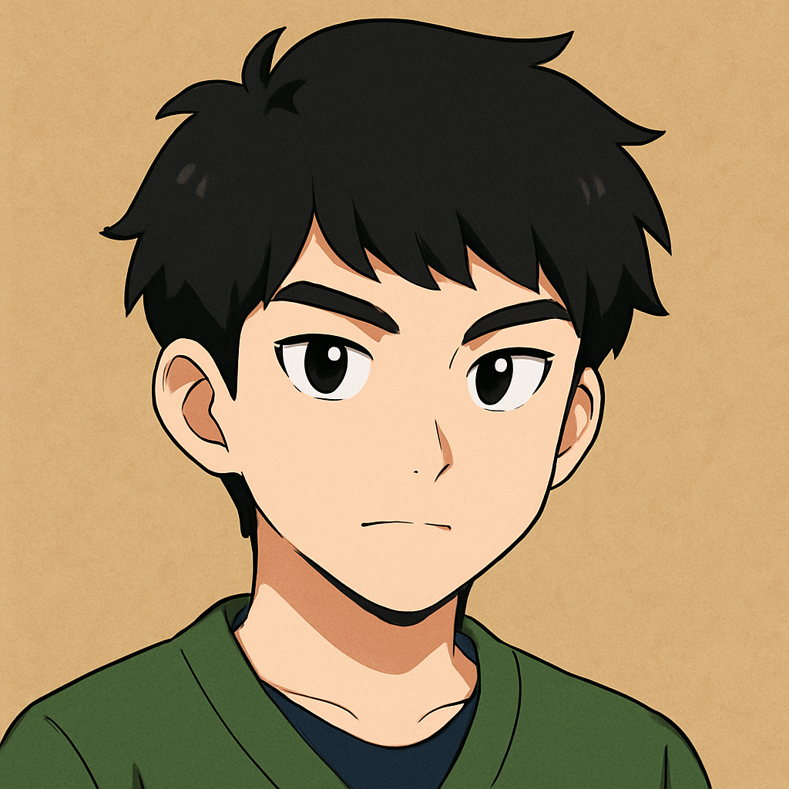

|  | |
| 個人資料 | 學習經歷 |
姓名:林宣丞 性別:男 E-mail:11213053@gm.hnvs.cy.edu.tw 興趣:電腦 |
僑平國小 南興國中 華南高商 幹部:無 社團:資訊研究社 |
當你來到嘉義市，展開一場輕鬆愉快的小旅行，最好的方式之一就是騎乘Ubike在市區自由穿梭。嘉義的Ubike站點遍布市區，特別是在嘉義火車站與文化路商圈周邊設置密集，租借簡單、費用便宜，是遊覽這座城市的理想選擇。你只需要一卡在手，就能在市區悠閒騎行，感受嘉義特有的南台灣慢節奏。
從嘉義火車站騎著Ubike出發，不一會就能抵達文化路。這裡不只是嘉義人最愛逛街的地段，也是夜晚最熱鬧的地方。白天的文化路少了夜市的擁擠，多了幾分在地生活的寫實。你可以在路邊品嚐嘉義知名的雞肉飯，或走進街角的甜品店來碗豆花，接著順著文化路繼續向前，就能發現許多意想不到的驚喜。
其中一個值得一訪的就是「熊愛夾遊戲樂園」。這間藏身在文化路78號、全年無休的夾娃娃機店，是許多年輕人與親子客的快樂樂園。即使不是夾娃娃達人，來到這裡也很容易沉浸在琳瑯滿目的商品與遊戲挑戰中。從各式餅乾、飲料、玩具，到時下最夯的角色收藏品，只要抓準技巧、運氣不錯，就有機會把心儀的商品夾回家。園內設有專人協助，還會不定期推出獎勵活動，讓整個遊戲過程更具成就感。
如果你還想體驗更多復古與懷舊風格的遊樂機台，那麼不妨繼續前往附近曾經風靡一時的「變色龍歡樂世界」舊址。雖然如今已不再營業，但對許多嘉義人來說，那是一段童年回憶的象徵。而現在，嘉義仍有如湯姆熊這類的連鎖遊樂場，分布在百貨商場或購物中心內，設備更新、設計現代，也同樣適合闔家大小一起同樂。
從Ubike的慢速探索，到文化路上的美食與遊樂體驗，這趟嘉義市區小旅行充滿了驚喜與歡笑。它讓人放慢腳步，在歡樂與在地的節奏中，重新發現城市裡最平凡卻溫暖的角落。
學完這一學期的網頁設計課，我最大的感想是：「原來網頁的每一個小細節，都是設計者背後精心安排的結果。」從一開始摸索 HTML 結構、學習 CSS 美化畫面，到後來用，過程雖然不簡單，但也很有成就感。
一開始我只是照著步驟做，複製貼上感覺不到什麼樂趣，但慢慢地我開始懂得怎麼調整顏色、排版、加圖片和影片，甚至嘗試設計自己的版面風格。當看到自己的網頁從一片空白變成一個有主題、有內容、有互動的作品時，那種「做出屬於自己作品」的感覺真的很棒。
這學期的課也讓我學會很多問題解決的能力。像是程式碼錯了哪裡？為什麼圖片跑版？怎麼讓手機跟電腦都看起來正常？每個錯誤雖然會讓人煩，但修好後真的會越來越上手。透過這些過程，我也對網頁背後的運作原理有了更多理解，不再只是「用網站」，而是能「打造網站」。
最後，我也更懂得欣賞別人的網站設計。有時候逛網頁，會特別去觀察他們怎麼排版、配色、甚至動畫效果。原本只覺得好看，現在會想「我是不是也能做出類似的東西？」這讓我更有動力想繼續學下去，甚至開始想做出屬於自己風格的個人網站或作品集。
總之，網頁設計不只是一堂課，更像是打開了一扇創作與技術結合的大門。這學期的學習雖然辛苦，但我真的覺得收穫很多，也讓我對未來有更多想像空間。